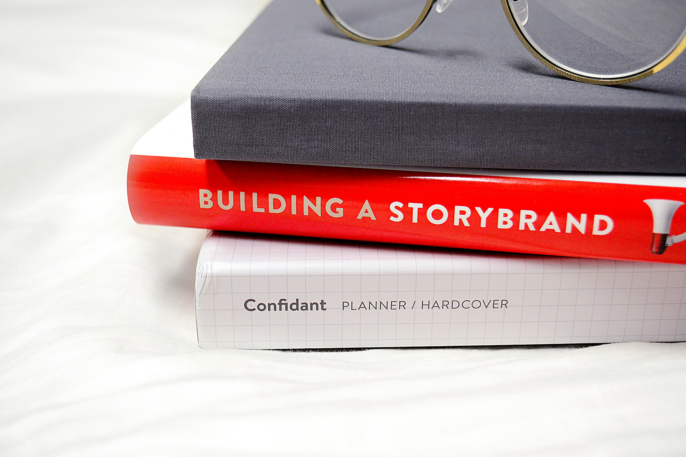

Why Every Small Business Needs a Website in 2025?
In 2025, having a website for your small business is no longer optional—it’s essential. Whether you're running a bakery, a clothing brand, or a local consultancy, a professional online presence is one of the most powerful tools you can use to grow, compete, and thrive in the digital age.
Your Customers Are Online—You Should Be Too More than 5 billion people use the internet daily, and a large percentage of them rely on online searches to find businesses, products, or services. Without a website, your business risks being invisible to potential customers who are actively looking for what you offer. Fact: 76% of consumers look at a company’s online presence before visiting in person or making a purchase.

2. Open 24/7 — Even When You're Not Unlike a physical store, a website never sleeps. It allows customers to find information, browse your services or products, and even make purchases or bookings anytime—day or night. This extends your business hours without increasing your workload.
3. Boosts Credibility and Builds Trust A well-designed website adds professionalism and trust to your brand. It shows that you’re serious, reliable, and real. In fact, businesses with websites are often perceived as more trustworthy than those without. Include client testimonials Showcase case studies or past work Display certifications, achievements, or affiliations

4. Drives Sales and Leads Websites act as digital salespeople. Through landing pages, contact forms, and product pages, you can turn visitors into customers. Pair your website with SEO, social media, and ads, and you create a powerful lead-generating machine.
Irish Smith
Great read! I’ve been running a home bakery for years without a website, but after reading this, I’m definitely planning to get one set up soon
Christine Stewart
This blog makes a solid point. Most of my clients find me through Google, and my website has made a huge difference in bookings. Highly recommend for any small business owner!
Chintan Patel
I love how clearly you explained each benefit. Especially the part about 24/7 availability—never thought about my business working for me while I sleep!
John Doe
Informative and timely. In 2025, not having a website feels like being invisible. Thanks for highlighting this!
Reply
Ben Afflick
I just launched my website last month, and I’ve already seen an increase in inquiries. It’s definitely worth the investment. Wish I had done it sooner!
Jean Doe
I’ve been debating whether I need a website or just social media. This article helped me see that both are important, but the website is the core. Thanks!